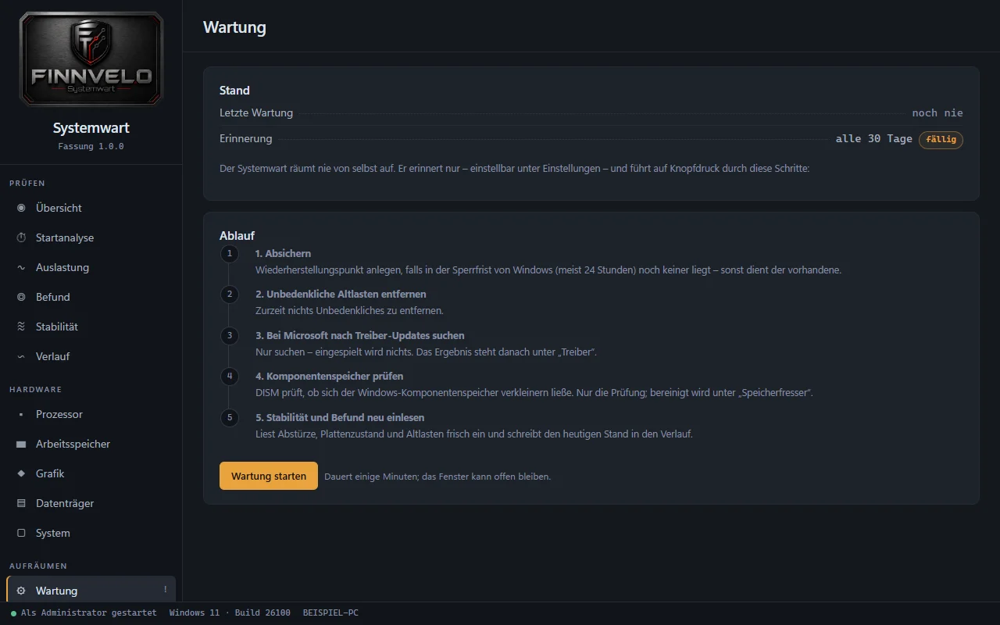
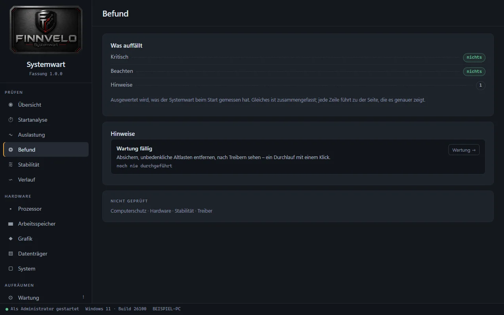
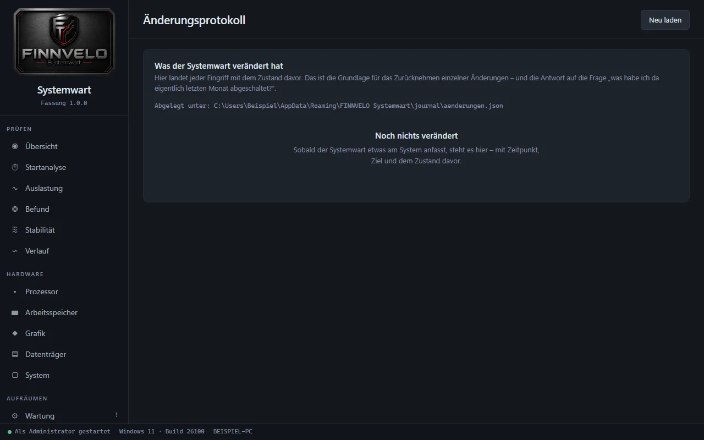
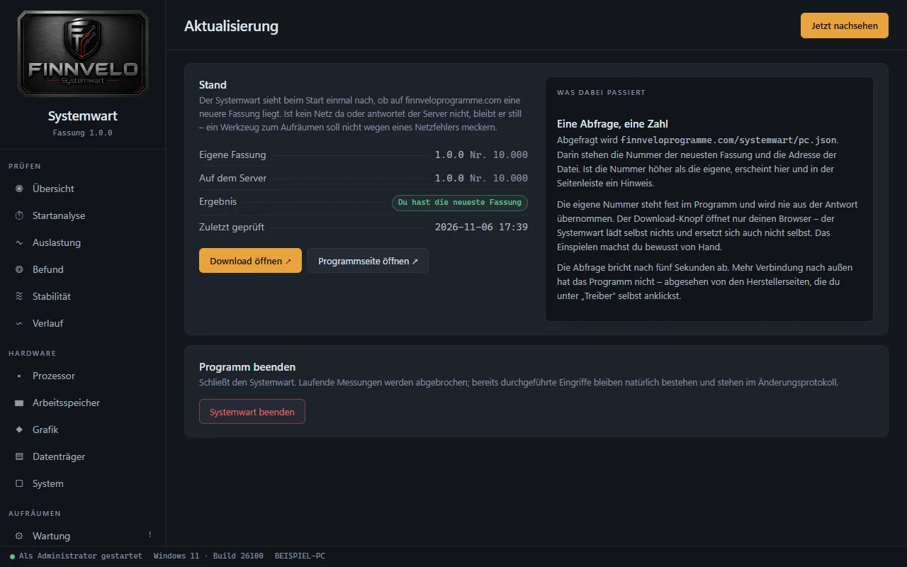
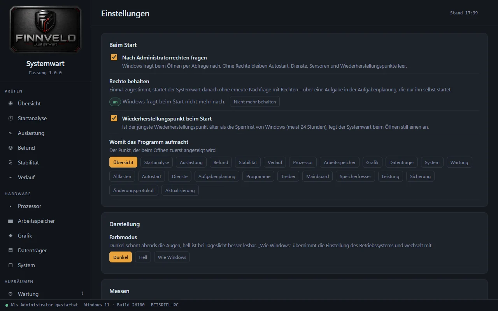
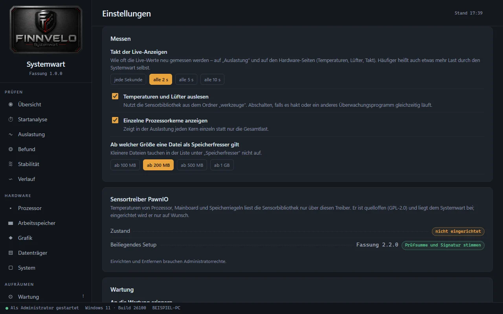
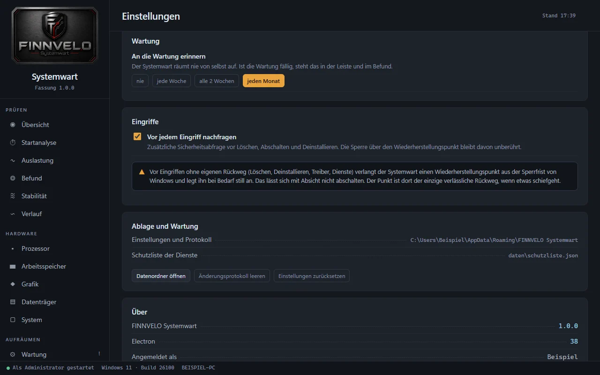
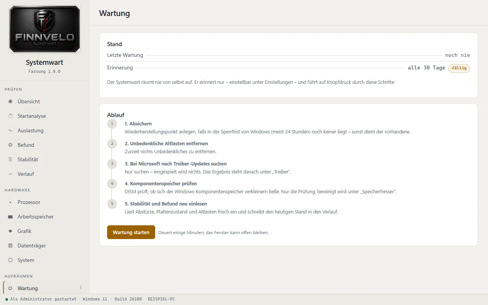

Prüfen · Bereinigen · Beschleunigen
Finnvelo Systemwart
In EntwicklungEin Allround-Werkzeug für Windows: Altlasten aufspüren und entfernen, Autostart und Dienste zähmen, Treiber prüfen, Temperaturen und Auslastung im Blick behalten. Vor jedem Eingriff legt das Programm einen Wiederherstellungspunkt an.
Beschreibung
Der Systemwart sammelt an einer Stelle, wofür man sonst ein halbes Dutzend Einzelwerkzeuge braucht. Er liest die verbaute Hardware aus, zeigt alle Laufwerke mit ihrem freien Platz und Gesundheitszustand, findet die größten Ordner und Dateien und räumt temporäre Ablagen, Zwischenspeicher und Reste alter Windows-Aktualisierungen weg.
Darüber hinaus lassen sich Autostart-Einträge, Dienste, geplante Aufgaben und installierte Programme durchsehen und einzeln abschalten oder entfernen. Jeder Eingriff landet mit dem Zustand davor im Änderungsprotokoll; Autostart und Leistungseinstellungen lassen sich dort einzeln zurücknehmen. Vor Eingriffen ohne eigenen Rückweg – Löschen, Deinstallieren, Treiber, Dienste – verlangt der Systemwart einen Wiederherstellungspunkt von heute.
Treiber werden über die Aktualisierungsschnittstelle von Windows geprüft. Herstellerseiten werden nur verlinkt, nie im Hintergrund angezapft – so bleibt nachvollziehbar, woher eine Datei stammt.
Das Programm ist in fünf Bereiche gegliedert. Prüfen zeigt die Übersicht, eine Startanalyse mit den Bremsern beim Hochfahren, die Auslastung live, den Befund, die Stabilität mit Abstürzen und einen Verlauf. Hardware liest Prozessor, Arbeitsspeicher, Grafik, Datenträger und System aus. Aufräumen umfasst Wartung, Altlasten, Autostart, Dienste, Aufgabenplanung, Programme und Speicherfresser. Erneuern kümmert sich um Treiber, Mainboard und Leistung, Absichern um Wiederherstellungspunkte und das Änderungsprotokoll.
Die Wartung führt auf Knopfdruck durch fünf Schritte: absichern, unbedenkliche Altlasten entfernen, bei Microsoft nach Treiber-Updates suchen, den Komponentenspeicher prüfen und Stabilität und Befund neu einlesen. Der Systemwart räumt nie von selbst auf – er erinnert nur, ab Werk alle 30 Tage.
Systemkritische Dienste und Einträge stehen auf einer Schutzliste und werden gar nicht erst angeboten. Temperaturen, Lüfter und Takt liest eine mitgelieferte Sensorbibliothek; für Prozessor, Mainboard und Speicherriegel lässt sich auf Wunsch der quelloffene Sensortreiber PawnIO einrichten, dessen Prüfsumme und Signatur das Programm vorher kontrolliert.
Übersicht und Startanalyse
Zeigt den Zustand des Rechners auf einen Blick und welche Programme den Windows-Start bremsen.
Hardware und Laufwerke
Prozessor, Speicher, Grafik und Mainboard auslesen; Laufwerke mit Gesundheitswerten und aktuellem Lese- und Schreibtempo.
Altlasten und Speicherfresser
Temporäre Dateien und Update-Reste entfernen, die größten Ordner und Dateien aufspüren, den Komponentenspeicher bereinigen.
Autostart, Dienste, Aufgaben
Einträge einzeln abschalten – systemkritische Dienste stehen auf einer Schutzliste und werden gar nicht erst angeboten.
Leistung
Energieplan, SysMain, Indexdienst, visuelle Effekte, Hintergrund-Apps und Spielemodus – jede Stellschraube einzeln und mit Rückweg.
Auslastung live
Prozessor, Arbeitsspeicher, Datenträger, Grafik und Netz in Echtzeit, dazu Temperaturen, Lüfter, Takt und die hungrigsten Programme.
Wartung auf Knopfdruck
Fünf Schritte vom Wiederherstellungspunkt bis zum neuen Befund – mit Erinnerung, aber nie von selbst.
Befund
Fasst zusammen, was kritisch ist, was Beachtung verdient und welche Hinweise es gibt – jede Zeile führt zur passenden Seite.
Treiber aus seriöser Quelle
Suche und Installation über Microsoft Update; Herstellerseiten nur als Link. Reste des anfälligen Treibers WinRing0 lassen sich entfernen.
Sicherung
Computerschutz prüfen und einschalten, Wiederherstellungspunkte setzen – auf Wunsch automatisch beim Start.
Änderungsprotokoll
Jeder Eingriff mit Zeitpunkt, Ziel und Zustand davor – die Grundlage fürs Zurücknehmen.
Erklärungen eingebaut
Zu jedem Messwert steht direkt daneben, was er bedeutet – samt Gerätefehlercodes und Stopcodes.
Oberfläche
Die folgenden Ansichten zeigen den Finnvelo Systemwart 1.0.0 auf einem Beispielrechner – ausschließlich Seiten ohne Messwerte eines echten Systems. Ein Klick auf ein Bild öffnet es groß.
Pflegen und Absichern




Einstellungen und Aussehen




Einstellungen – das kannst du anpassen
Ab Werk ist der Systemwart vorsichtig eingestellt. Ein Überblick über alles, was sich anpassen lässt:
Beim Start
- Nach Administratorrechten fragenOhne Rechte bleiben Autostart, Dienste, Sensoren und Wiederherstellungspunkte leer.
- Rechte behaltenEinmal zugestimmt, startet der Systemwart künftig ohne erneute Abfrage – über eine Aufgabe, die nur ihn selbst startet. Abschaltbar, der Deinstaller entfernt sie.
- Wiederherstellungspunkt beim StartIst der jüngste Punkt älter als die Sperrfrist von Windows, legt der Systemwart still einen neuen an.
- Womit das Programm aufmachtJede der Seiten kann Startseite sein.
Darstellung und Messen
- FarbmodusDunkel, hell oder wie Windows.
- Takt der Live-AnzeigenJede Sekunde, alle 2, 5 oder 10 Sekunden.
- Temperaturen und Lüfter auslesenÜber die mitgelieferte Sensorbibliothek – abschaltbar, falls ein anderes Überwachungsprogramm läuft.
- Einzelne Prozessorkerne anzeigenJeder Kern einzeln statt nur der Gesamtlast.
- Ab welcher Größe eine Datei als Speicherfresser gilt100 MB, 200 MB, 500 MB oder 1 GB.
Sensortreiber und Wartung
- Sensortreiber PawnIOLiegt bei, wird nur auf Wunsch eingerichtet und wieder entfernt – vorher prüft der Systemwart Prüfsumme und Signatur.
- An die Wartung erinnernNie, jede Woche, alle 2 Wochen oder jeden Monat.
- Vor jedem Eingriff nachfragenZusätzliche Sicherheitsabfrage vor Löschen, Abschalten und Deinstallieren.
Ablage, Aktualisierung und Über
- DatenordnerEinstellungen und Änderungsprotokoll öffnen, das Protokoll leeren oder die Einstellungen zurücksetzen.
- Schutzliste der DiensteWas nie angeboten wird, steht in einer eigenen Datei.
- AktualisierungBeim Start still nachsehen oder von Hand – der Download öffnet nur den Browser, eingespielt wird von Hand.
- ÜberFassung, Laufzeit und die Lizenzen aller mitgelieferten Bausteine.
Besondere Vorteile
- Wiederherstellungspunkt vor Eingriffen ohne eigenen Rückweg
- Änderungsprotokoll mit dem Zustand vor jedem Eingriff
- Schutzliste für systemkritische Dienste, die nicht angefasst werden
- Temperaturen und Auslastung live
- Treiber nur aus seriöser Quelle
- Erklärungen zu jedem Punkt direkt im Programm
- Räumt nie von selbst auf – erinnert nur
- Läuft auch ohne Administratorrechte – dann mit weniger Angaben
Zielgruppe
Alle, die ihren Windows-Rechner selbst in Ordnung halten wollen, ohne sich durch ein Dutzend Systemeinstellungen zu klicken – und ohne Angst, dabei etwas kaputtzumachen.
- Wer wissen will, warum der Rechner langsam startet oder die Festplatte voll ist.
- Wer seinen PC regelmäßig pflegen möchte, aber keine Lust auf Werkzeuge mit Werbung und Abo hat.
- Wer nachvollziehen möchte, was ein Programm am System verändert hat – und es zurücknehmen kann.
- Wer Familie oder Freunden den Rechner einrichtet und dabei auf Nummer sicher gehen will.
Daten und Datenschutz
Alle Messungen laufen auf deinem Rechner. Einstellungen und Änderungsprotokoll liegen als Dateien im Datenordner des Programms unter AppData. Es gibt kein Konto und keine Anmeldung.
Ins Netz geht der Systemwart nur für drei Dinge: eine kurze Abfrage der neuesten Fassung bei finnveloprogramme.com, die nach fünf Sekunden abbricht, die Treibersuche über Microsoft Update und die Herstellerseiten, die du unter „Treiber“ selbst anklickst.
Tutorial-Video
Ein Tutorial-Video wird hier ergänzt, sobald es bereitsteht.
Download (PC-Version)
Programm herunterladen
Installationsprogramm für Windows. Für die meisten Aufgaben fragt der Systemwart beim Start nach Administratorrechten; ohne sie läuft er eingeschränkt weiter.
PC-Version herunterladenHinweis
Windows meldet bei unbekannten Programmen einen Warnhinweis. Über „Weitere Informationen“ → „Trotzdem ausführen“ lässt sich der Start fortsetzen.